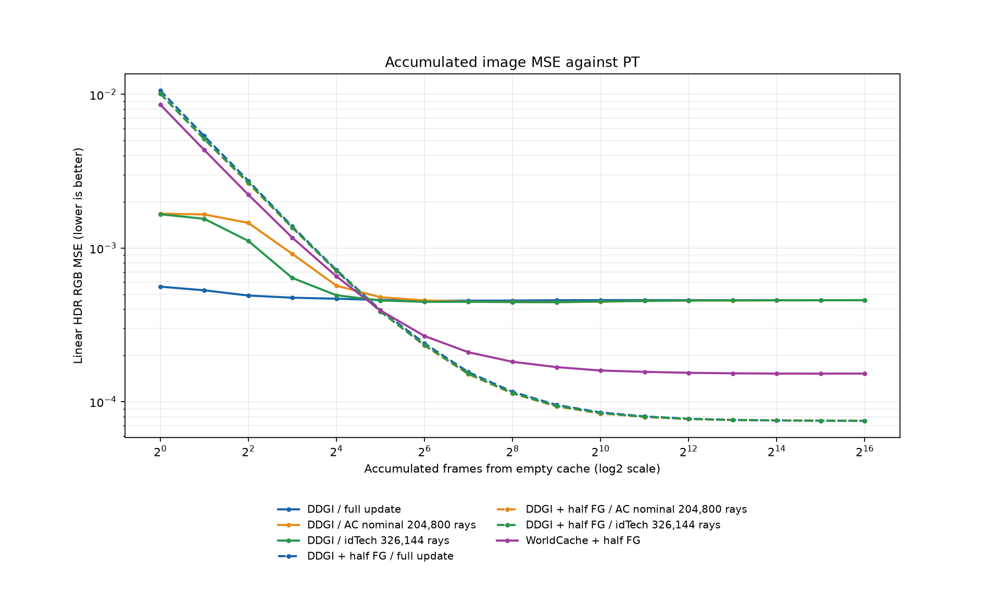
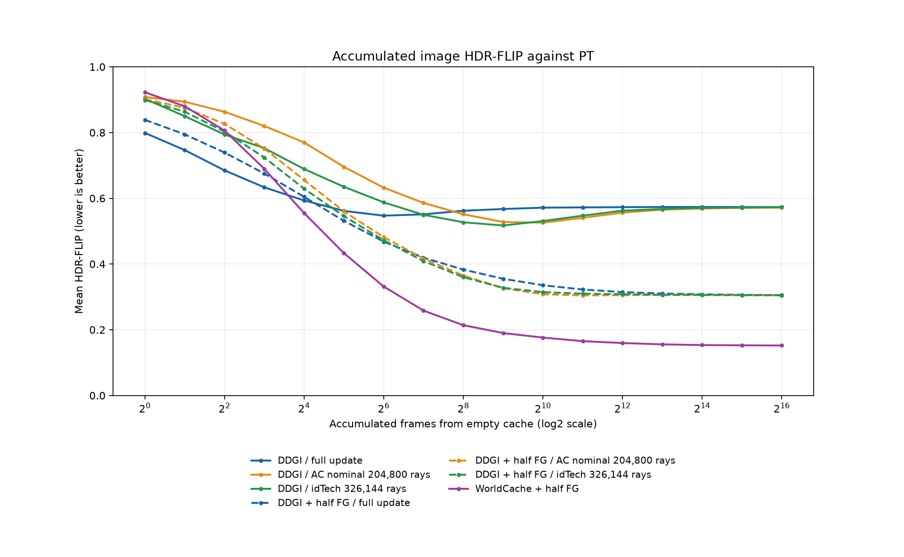
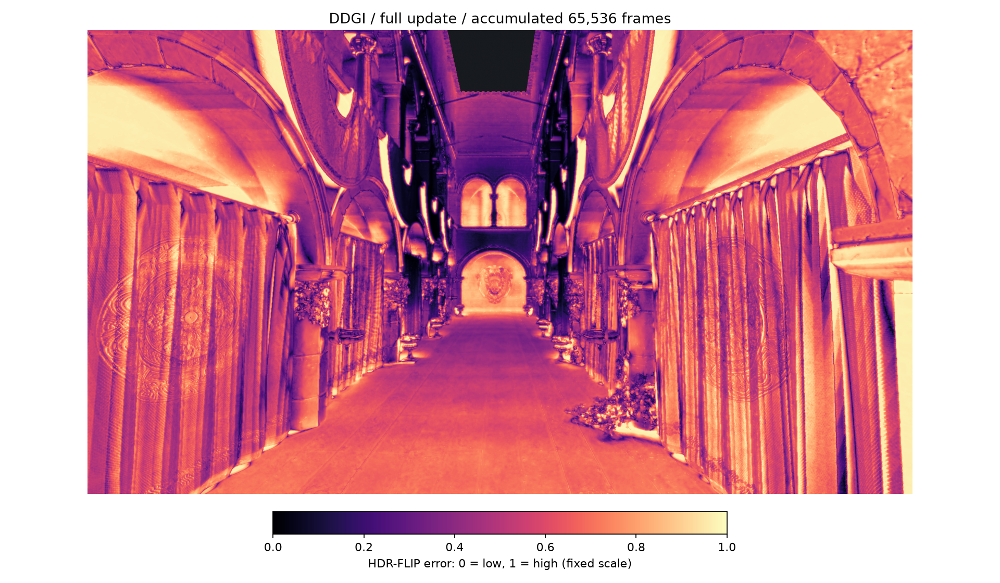
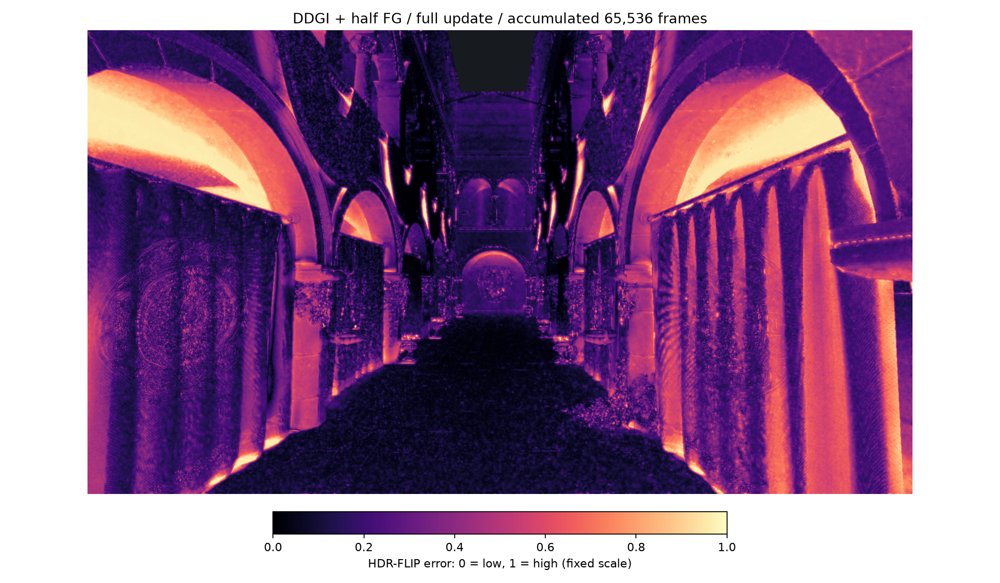
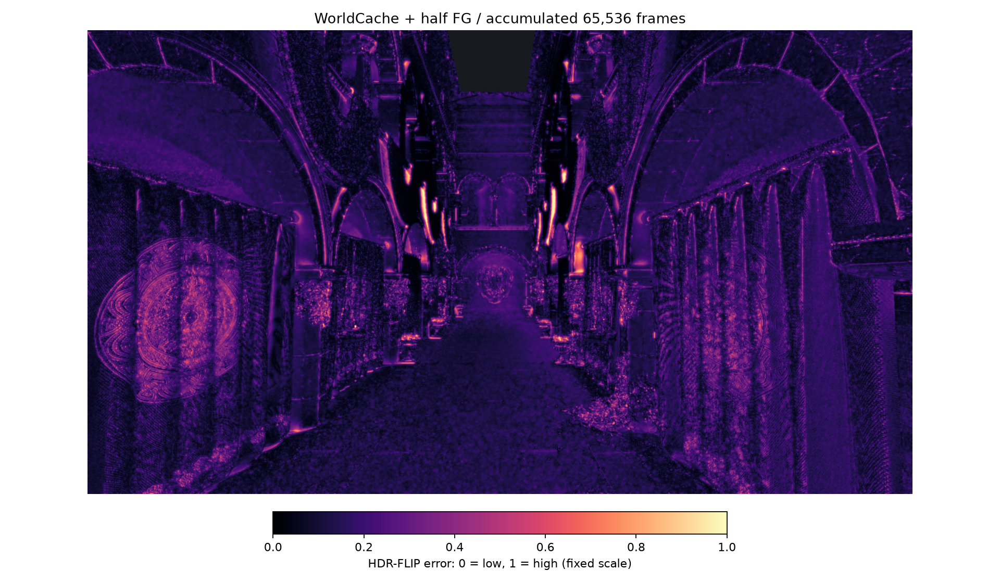

两张曲线图各有七条曲线，全部取 Accumulate 后的最终颜色：原生 DDGI 三档、DDGI＋半分辨率 FG 三档，以及迁移版 WorldCache＋半分辨率 FG。横轴从空缓存和空画面历史开始计帧，不预热后偷换起点；每个检查点都是第 1 帧至该帧的连续平均。纵轴分别为相对同一张 PT 的 MSE 与 HDR-FLIP。没有展示未累积的单帧噪声曲线。
冷启动期间缓存自身也在变化，因此误差曲线不保证单调下降，早期偶然较低的误差不代表最终质量更好。曲线在每组实际通过稳定检查的帧数结束，不将不同最终帧数的数据伪装成相同采样预算。
实线为原生 DDGI，虚线为 DDGI＋半分辨率 FG，同色对应同一预算；紫色为 WorldCache。三条 FG 的 MSE 曲线几乎重合，并非漏画。七组最终均在 65536 帧通过连续两次稳定检查。
SponzaLambert，1920×1080，固定相机 (-9,1.6,0) 看向 (8,2.5,0)，点光源 RGB 600，方向光关闭。官方布局 22³=10648 probes，中心 (-0.4,5.4,-0.25)，间距 (1.02,0.5,0.45)。每 probe 256 rays，hysteresis 0.97，开启 relocation/classification。主命中法线修正开启。两条 FG 均为 960×540、每个粗像素一根漫反射射线、固定左上采样、同一深度/法线引导重建；ReSTIR、NRD、RTXDI、WRC 屏幕/世界共享关闭。Accumulate 为 SingleCompensated，关闭自动重置。
| 档位 | 来源乘积 | 本地更新 probe/帧 | 本地名义 probe rays/帧 |
|---|---|---|---|
| 全量 | 10648×256 | 10648 | 2725888 |
| 刺客信条影 PC 名义预算 | 512×20×20 | 800 | 204800 |
| idTech 8 高档预算 | (16³＋10³)×64 | 1274 | 326144 |
来源：刺客信条影 SIGGRAPH 2025 演讲第 37、39、132 页；idTech 8 演讲PDF 第 16 页（幻灯片 15）。按用户选定口径，刺客信条影使用全部 512 probes 重追 400 个方向的名义预算；实际演讲中只有约 16% 重追 GBuffer，其他 probe 可复用几何，此处不采用该折减。idTech 8 取每帧一个 16³ cascade 加一个 10³ local volume、64 rays 的高档配置。
分批调度跨网格尾部回绕，每帧补足 800 或 1274 个，不留短尾批。以上匹配的是名义探针追踪预算；inactive 探针仍遵循 DDGI 原策略，仅追踪 32 条固定射线，所以实际 TraceRay 少于名义值。直接光阴影射线和 FG 射线不计入该乘积。该实验不复现两款游戏的优先级调度、缓存复用或实际 GPU 工作量。
WorldCache 是本项目迁移版：每帧 240×135 个更新路径起点、最多 3 跳、2²⁰ 条目、density 20、最小 cell 0.025、history 16、64 帧未用淘汰，不设亮度 clamp。它没有 DDGI probe，不强行套用这三档预算。
PT 复用相同场景/灯光的 131072 spp 未降噪参考。MSE 为共同可见表面 mask 内线性 HDR RGB；HDR-FLIP 使用共同曝光范围、ACES、PPD 67。所有展示图共用曝光。每条曲线仅一条随机序列，不把微小差异解释为普遍优势。
| 方案 | probe/帧 | 累积帧数 | MSE ↓ | HDR-FLIP ↓ | 整图 ms | 稳定检查 |
|---|---|---|---|---|---|---|
| 原生 DDGI · 全量 | 10648 | 65536 | 0.0004578139 | 0.57321 | 4.509 | 通过 |
| 原生 DDGI · 刺客信条影名义预算 | 800 | 65536 | 0.0004570651 | 0.57174 | 2.227 | 通过 |
| 原生 DDGI · idTech 8 预算 | 1274 | 65536 | 0.0004576563 | 0.57282 | 2.354 | 通过 |
| DDGI＋半分辨率 FG · 全量 | 10648 | 65536 | 7.509143e-05 | 0.30540 | 4.875 | 通过 |
| DDGI＋半分辨率 FG · 刺客信条影名义预算 | 800 | 65536 | 7.507054e-05 | 0.30471 | 2.613 | 通过 |
| DDGI＋半分辨率 FG · idTech 8 预算 | 1274 | 65536 | 7.508037e-05 | 0.30497 | 2.739 | 通过 |
| WorldCache＋半分辨率 FG | 独立缓存 | 65536 | 0.0001525015 | 0.15203 | 1.930 | 通过 |
下表直接比较相同算法在不同更新预算下的稳定图，不与 PT 混淆。小差异表示两档预算最终接近同一画面，不意味着每个像素严格相等。
| 低预算方案 | 与对应全量更新稳定图的 MSE |
|---|---|
| 原生 DDGI · 刺客信条影名义预算 | 1.6531e-08 |
| 原生 DDGI · idTech 8 预算 | 9.02145e-09 |
| DDGI＋半分辨率 FG · 刺客信条影名义预算 | 7.74268e-11 |
| DDGI＋半分辨率 FG · idTech 8 预算 | 3.94145e-11 |


不是只判断 probe 数值稳定：至少累积 65536 帧，并要求连续两次累积翻倍同时满足以下条件：最终颜色差的线性 RGB RMS / PT RGB RMS <0.1%；统一显示映射后平均绝对颜色变化 <0.25/255，99 百分位 <2/255；对 PT 的 MSE 与 HDR-FLIP 相对变化各 <1%。未满足则继续翻倍，表中明确标记是否通过。这是静态最终画面的实用判稳，非数学无偏或逐像素零变化保证。
| 方案 | 尾段相对 RGB RMS | 显示平均变化 /255 | 显示 P99 变化 /255 | MSE 变化 | HDR-FLIP 变化 |
|---|---|---|---|---|---|
| 原生 DDGI · 全量 | 0.007% | 0.0080 | 0.0890 | +0.003% | -0.035% |
| 原生 DDGI · 刺客信条影名义预算 | 0.022% | 0.0284 | 0.3104 | -0.078% | +0.182% |
| 原生 DDGI · idTech 8 预算 | 0.016% | 0.0202 | 0.2119 | +0.104% | +0.110% |
| DDGI＋半分辨率 FG · 全量 | 0.062% | 0.0867 | 0.8044 | -0.213% | -0.269% |
| DDGI＋半分辨率 FG · 刺客信条影名义预算 | 0.062% | 0.0869 | 0.8044 | -0.164% | -0.080% |
| DDGI＋半分辨率 FG · idTech 8 预算 | 0.062% | 0.0868 | 0.8043 | -0.185% | -0.143% |
| WorldCache＋半分辨率 FG | 0.054% | 0.0757 | 0.6775 | +0.126% | -0.342% |
采用每帧全量更新 probe 的稳定图。这里的“全量”是更新频率，原生 DDGI 本身在全分辨率像素上查询 probe。

采用每帧全量更新 probe，FG 仍为半分辨率。


三图共用固定 Magma [0,1] 色标：暗色误差小、亮色误差大；不是百分比相似度，也不区分偏亮/偏暗。mask 外是深灰背景。
原图：原生 DDGI · DDGI＋半 FG · WorldCache＋半 FG · PT；完整数据、参数、源码哈希和各预算最终图之间的差异。